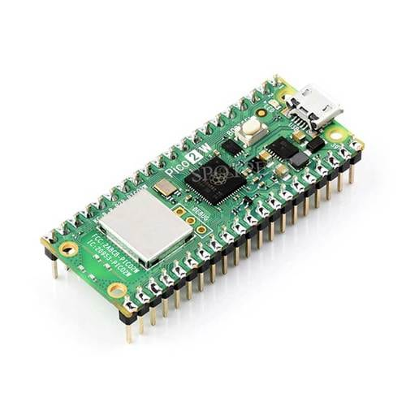

Raspberry Pi Pico W

树莓派自研 RP2040 双核 Cortex-M0+ 加 Wi-Fi 的微控制器板，133MHz、264KB SRAM、2MB Flash，独特的 PIO 状态机可自定义接口，MicroPython 体验极佳，是极客桌上的万金油。
客观评测
Raspberry Pi Pico W 在 RP2040（双核 Cortex-M0+ 133MHz、264KB SRAM）基础上加入 CYW43439 无线模组，提供 Wi-Fi 802.11 b/g/n 与 BLE，板载 2MB QSPI Flash。26 个 GPIO 支持 PWM、ADC、UART、SPI、I2C，两组 PIO 状态机可实现自定义时序协议，MicroPython 支持完善。
主观点评
Pico W 是那种“买着便宜、玩着上头”的板子。拖个 main.py 进 U 盘就跑起来的 MicroPython 体验，让调试变得像写脚本一样轻松；PIO 更是黑科技，点个灯带、做个逻辑分析仪都不在话下。加上 Wi-Fi 后物联网小项目也齐活了。缺点是内存不算大、天线一般，但这个价位实在难再苛求。入门与进阶之间，它是很好的一站。
优点与不足
- PIO 状态机可实现 WS2812、DVI 等自定义时序接口
- MicroPython 拖拽烧录体验极佳，上手零门槛
- 5V 兼容供电与 26 个 GPIO，价格仅几十元
- 内存 264KB、无 PSRAM，大型程序空间有限
- 板载天线性能一般，远距离无线场景受限
参数规格
| 主控 | 树莓派 RP2040 |
|---|---|
| 内核 | 双核 Arm Cortex-M0+ |
| 主频 | 133MHz |
| Flash | 2MB（板载 QSPI Flash） |
| SRAM | 264KB（6 组 bank） |
| 无线 | 英飞凌 CYW43439：Wi-Fi 802.11 b/g/n、蓝牙 5.2 / BLE |
| GPIO | 26 个多功能 GPIO（3.3V 电平） |
| ADC | 3 路 12-bit ADC（最多 5 通道） |
| 特色外设 | 2 组 PIO 可编程 IO 状态机（可实现自定义接口） |
| 通信接口 | 2× UART、2× SPI、2× I2C、16 路 PWM |
| 工作电压 | 1.8-5.5V（板载稳压） |
| USB | micro-USB（支持 USB 大容量存储烧录） |
| 开发环境 | MicroPython、C/C++ SDK、Arduino、CircuitPython |